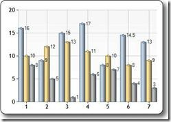

From http://www.w3schools.com (Copyright Refsnes Data)
The Chart Helper - One of many useful ASP.NET Web Helpers.
In the previous chapters, you learned how to use an ASP.NET "Helper".
You learned how to display data in a grid using the "WebGrid Helper".
This chapter explains how to display data in graphical form, using the "Chart Helper".
The "Chart Helper" can create chart images of different types with many formatting options and labels. It can create standard charts like area charts, bar charts, column charts, line charts, and pie charts, along with more specialized charts like stock charts.

The data you display in a chart can be from an array, from a database, or from data in a file.
The example below shows the code needed to display data from an array of values:
Example
Run example » |
- new Chart creates a new chart object and sets its width and height
- the AddTitle method specifies the chart title
- the AddSeries method adds data to the chart
- the chartType parameter defines the type of chart
- the xValue parameter defines x-axis names
- the yValues parameter defines the y-axis values
- the Write() method displays the chart
You can run a database query and then use data from the results to create a chart:
Example
Run example » |
- var db = Database.Open opens the database (and assigns the database object to the variable db)
- var dbdata = db.Query runs a database query and stores the result in dbdata
- new Chart creates a chart new object and sets its width and height
- the AddTitle method specifies the chart title
- the DataBindTable method binds the data source to the chart
- the Write() method displays the chart
An alternative to using the DataBindTable method is to use AddSeries (See previous example). DataBindTable is easier to use, but AddSeries is more flexible because you can specify the chart and data more explicitly:
Example
Run example » |
The third option for charting is to use an XML file as the data for the chart:
Example
Run example » |
From http://www.w3schools.com (Copyright Refsnes Data)